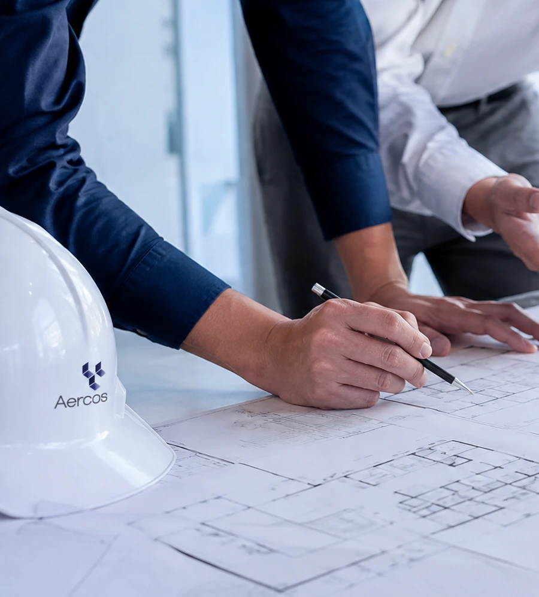
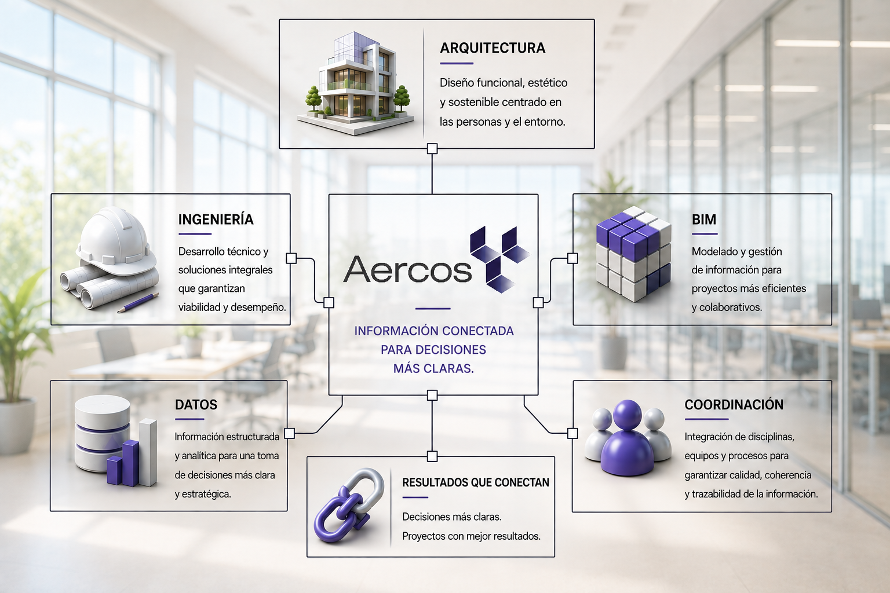

Arquitectura · Ingeniería · Gestión BIM
Proyectos complejos, coordinados con precisión.
Integramos arquitectura, ingeniería y tecnologías BIM para aportar claridad, control y valor en cada etapa del proyecto.
01 Quiénes somos

Una visión conectada
La complejidad se resuelve conectando las partes.
Aercos es una empresa especializada en arquitectura, ingeniería y gestión BIM. Acompañamos el desarrollo integral de proyectos con una mirada multidisciplinaria, rigurosa y orientada a resultados.
Conocer AercosCapacidades
Soluciones que integran disciplina y tecnología.
Gestión BIM
Estructuramos información y procesos para mejorar la toma de decisiones durante el ciclo de vida del proyecto.
Coordinación técnica
Compatibilizamos especialidades y anticipamos interferencias para una ejecución más eficiente.
Arquitectura e ingeniería
Desarrollamos soluciones coordinadas, precisas y alineadas con los objetivos de cada proyecto.
Ámbitos de trabajo
Capacidad técnica para distintas escalas.
Una mirada integrada para resolver los desafíos específicos de cada sector y cada etapa del proyecto.
Tecnologías
Información conectada para decisiones más claras.
Combinamos gestión de información, coordinación multidisciplinaria y procesos digitales para dar trazabilidad a cada etapa del proyecto.
Conocer el enfoque tecnológico
02 Primer contacto
Hablemos